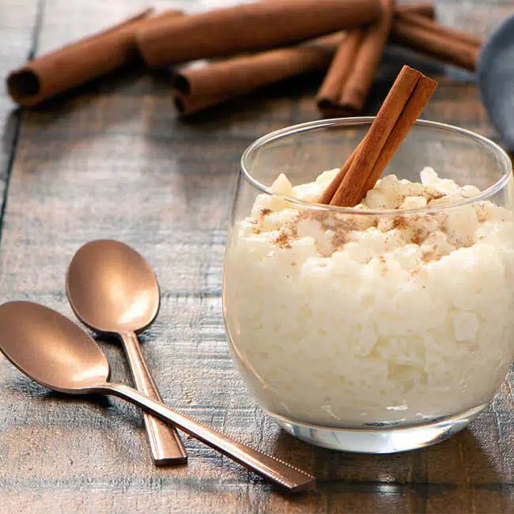

Arroz con Leche

Descripción
El arroz con leche es un delicioso postre peruano elaborado con arroz, leche evaporada, leche condensada y pasas. A menudo se aromatiza con canela, esencia de vainilla o fruta. Previamente, descubrimos juntos la receta de mazamorra morada, pero hoy hablaremos de la media naranja de este postre, pues una buena mazamorra es aún más perfecta con un delicioso arroz con leche.
Ingredientes
- 1 taza de arroz
- 1 lata de leche evaporada
- 1 lata de leche condensada
- trozos de limon
- 2 palitos de canela
- 3 clavos de olor
- 1/2 taza de pasas
- 1 cd de esencia de vainilla
- canela en polvo
Pasos
- En una olla añadimos la taza de arroz con 2 tazas de agua, agregamos las cáscaras de naranja, previamente hervidas, cambiándole el agua 5 veces para quitar el amargo de la cáscara de naranja. Le agregamos la canela y los 3 clavos de olor, dejamos que hierva hasta que el agua se consuma.
- Una vez que el arroz ya está seco, quitamos las cáscaras, la canela y los clavos de olor.
- Añadimos 1 taza de leche evaporada y dejamos que hierva siempre moviendo todo para asegurarnos de que el arroz no se pegue en el fondo de la olla repitiendo este paso cada 5 minutos.
- Pasado unos 20 minutos a fuego lento, añadimos 1 lata de leche condensada, dejando que se cocine por unos 10 minutos más.
- Apagamos el fuego y agregamos 1/2 taza de pasas rubias o negras remojadas en licor.
- Finalmente, añadimos 1 cucharadita de esencia de vainilla y listo, servimos al gusto espolvoreando canela en polvo para decorar.